Tablet de autoservicio por mesa
Cada mesa tiene su tablet con el menú en fotos, filtros por categoría (combinaciones, sushi, mariscos, pescados, postres), porciones pedidas y activas, estado de conexión y batería.
Plataforma para restaurantes de formato tecnológico: la mesa pide desde su tablet con menú digital, la cocina recibe en línea y la gerencia sigue la operación en un dashboard ejecutivo.
fishcool.integralflex.clParte de IntegralFlex Suites
FishCool digitaliza la operación completa de un restaurante de formato Kaitenzushi. Cada mesa tiene una tablet desde la que los comensales exploran el menú con fotos, piden porciones que llegan directo a cocina y juegan mientras esperan: al ganar liberan premios del gachapón, como un upgrade, un postre o una bebida.
Detrás de la sala, el sistema integra la cocina con semáforo de tiempos, el salón en línea, la caja por mesa, el inventario con compras y mermas, la fidelización de clientes frecuentes y las fichas técnicas con costo y margen de cada plato. El dashboard ejecutivo resume la operación y todo se configura desde el panel, sin tocar código.
Cada mesa tiene su tablet con el menú en fotos, filtros por categoría (combinaciones, sushi, mariscos, pescados, postres), porciones pedidas y activas, estado de conexión y batería.
Mientras esperan, los comensales juegan al gato, ahorcado, agilidad matemática y crucigrama. Al ganar se libera un premio (upgrade, postre o bebida) que se canjea desde la misma tablet.
Los platos llegan a la pantalla de cocina con mesa, categoría, número de pedido y minutos de espera, en verde, amarillo o rojo según el tiempo; el cocinero los toma y los despacha.
Plano de las 20 mesas con el número de platos activos de cada una y su intensidad (calma o máximo), para coordinar al equipo de sala.
Cuenta de cada mesa con subtotal, descuento, propina, pagado y saldo; pagos con tarjeta, efectivo o transferencia y cierre de la mesa.
Stock vivo de insumos con mínimos y proveedor, reposición rápida con costo unitario, registro de mermas y red de proveedores con calidad y condiciones de pago.
Clientes frecuentes por nivel y puntos con emisión de cupones, y fichas técnicas con el costo, precio y margen de cada plato, más alertas de los platos más rentables.
Tiempo promedio de preparación, platos del día, mesas activas, ranking de platos más vendidos y accesos directos a cada módulo de la operación.
Productos con imagen, categoría y precio; insumos con unidad y stock mínimo; usuarios por rol; registro de tablets por mesa y auditoría de eventos.
Del comensal al administrador, cada persona trabaja en la pantalla que necesita.
Usa la tablet de su mesa: mira el menú, pide porciones, juega y canjea los premios que gana. No necesita usuario ni contraseña.
Sigue el salón en línea, atiende las mesas con más actividad y entrega los premios canjeados.
Trabaja sobre la pantalla KDS: toma cada plato, lo prepara y lo despacha respetando el semáforo de tiempos.
Revisa la cuenta de cada mesa, registra pagos y propinas y cierra la sesión de la mesa.
Controla el stock de insumos, registra compras recibidas y mermas y mantiene a los proveedores.
Ve el dashboard ejecutivo y configura menú, insumos, usuarios, tablets y premios; revisa la auditoría de eventos.
Pantallas reales del sistema con datos de demostración: menú, pedidos, clientes y proveedores son ficticios.
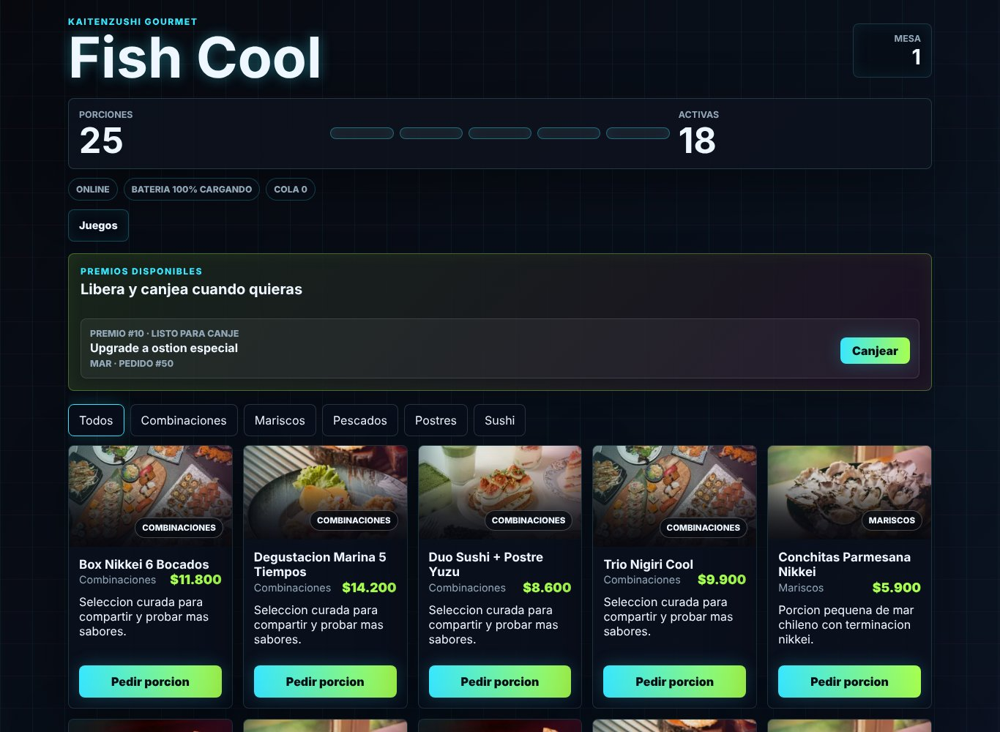
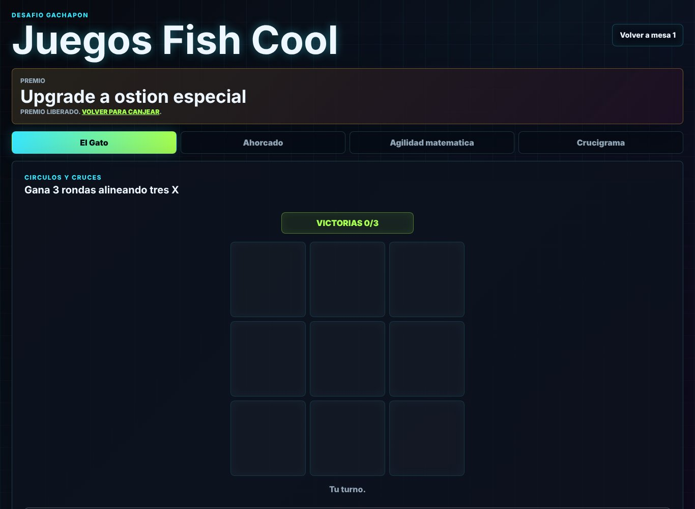
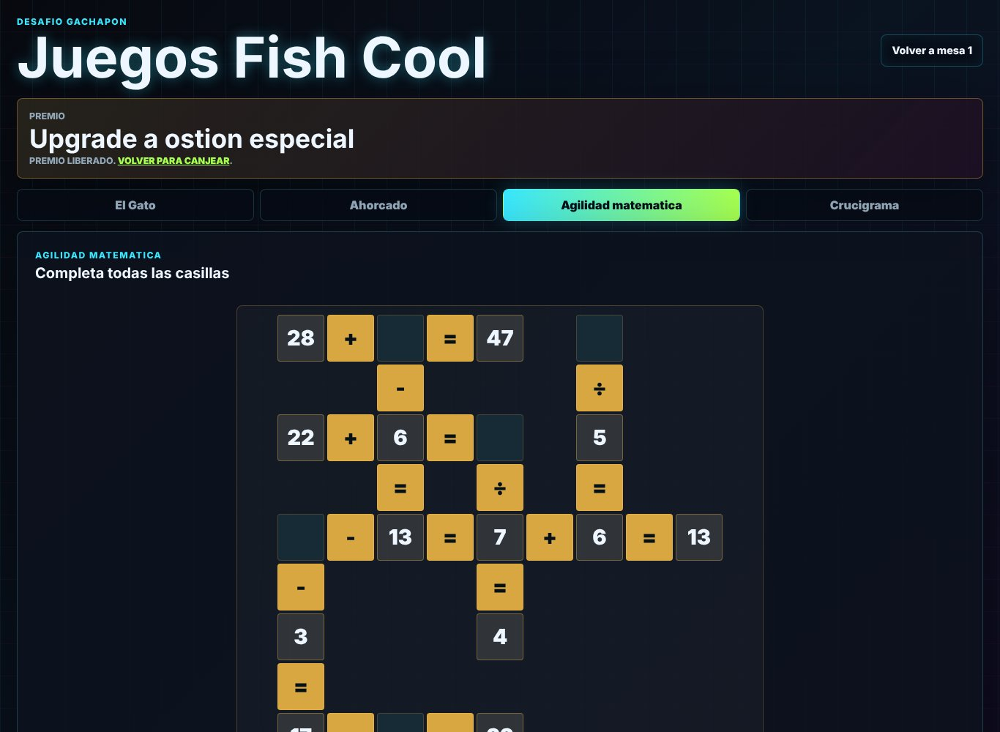
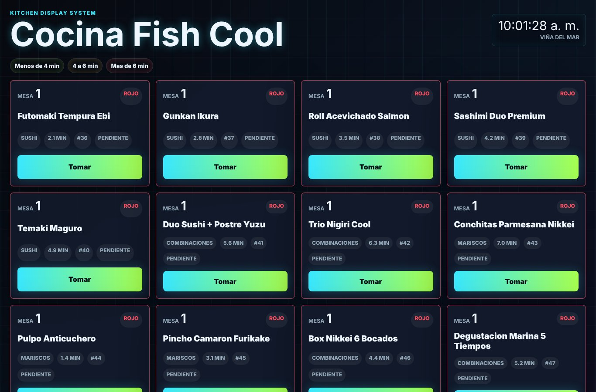
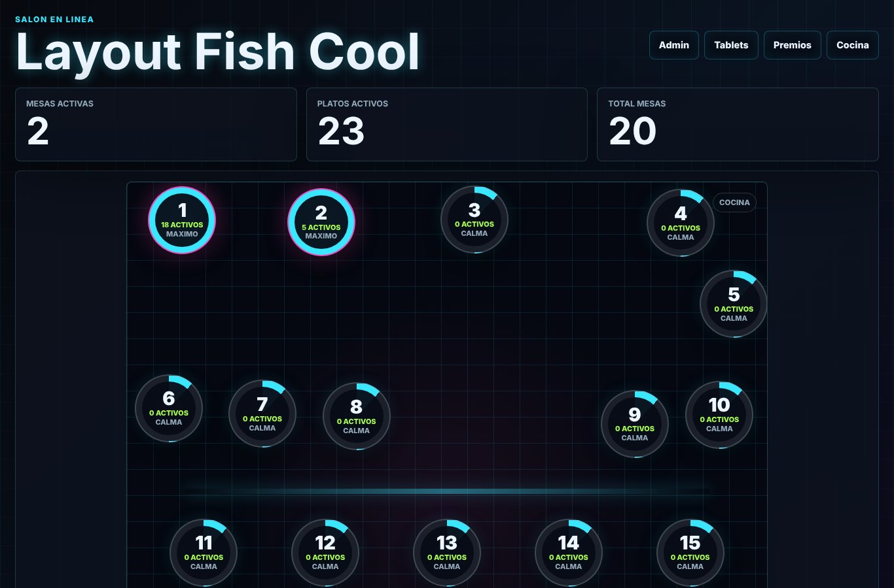
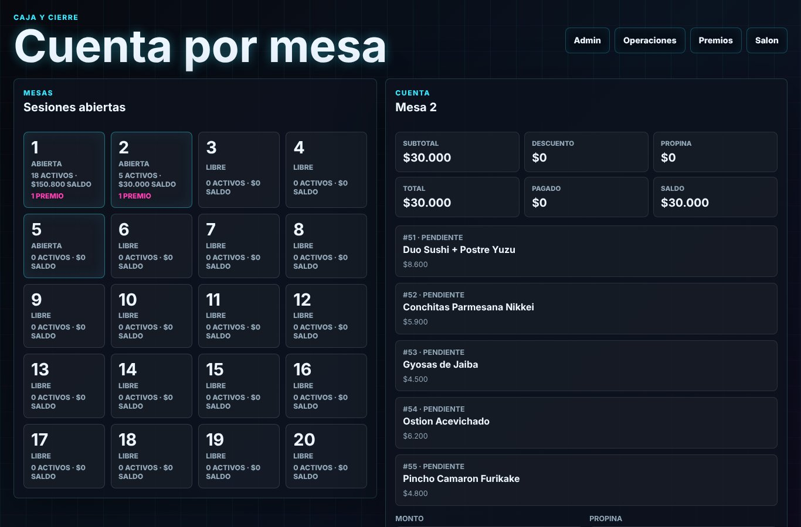
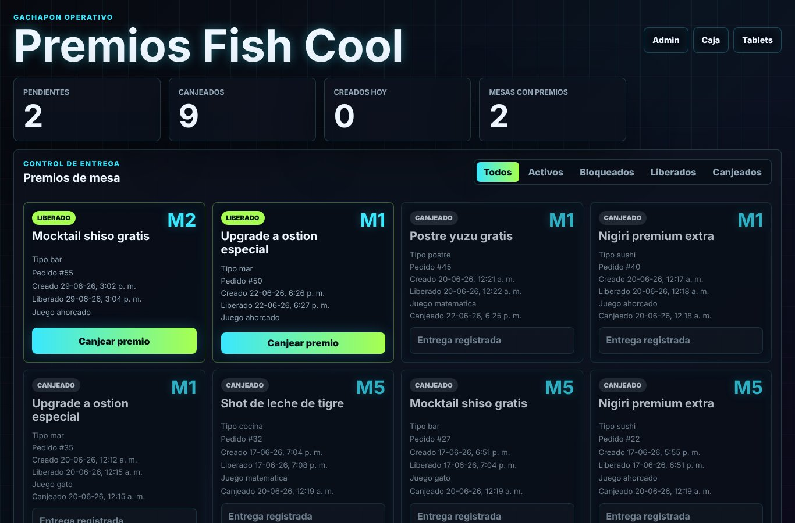
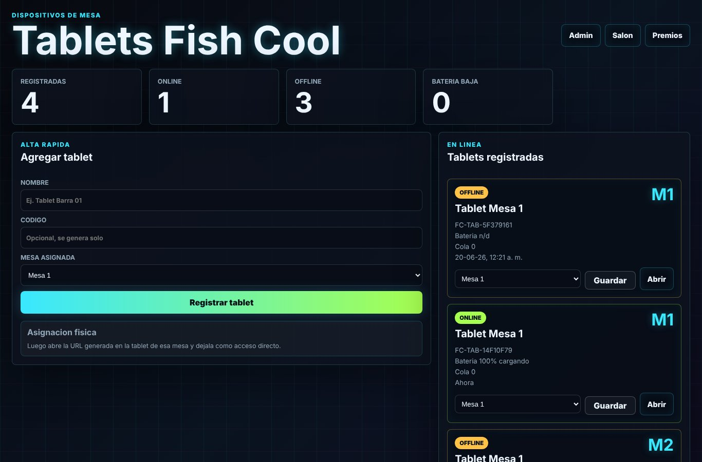
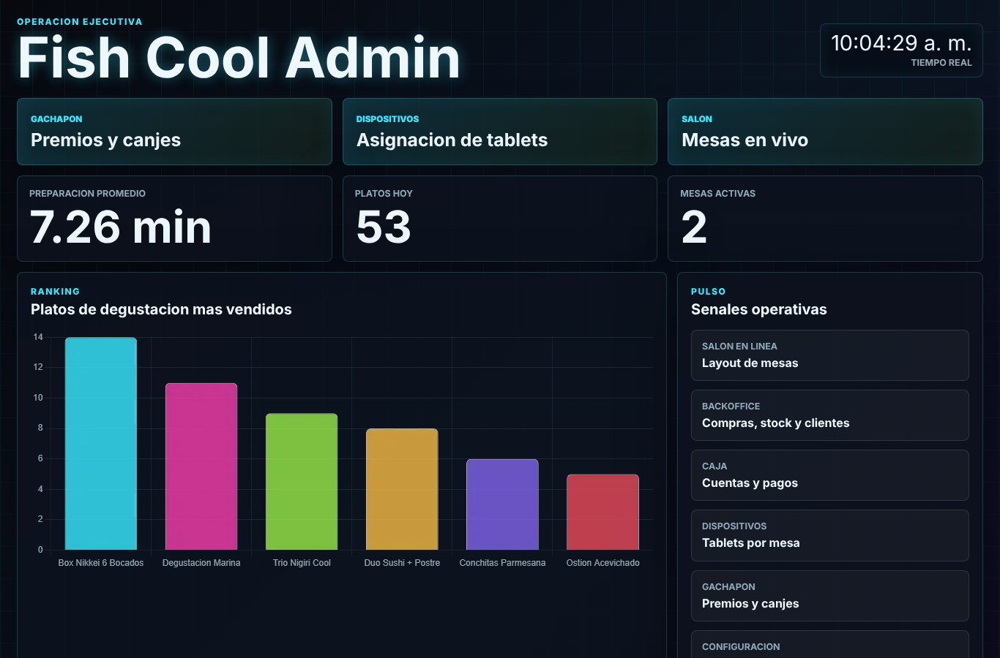
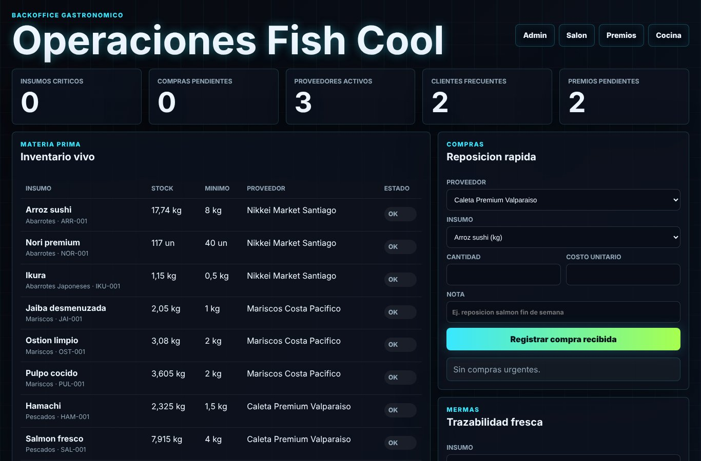
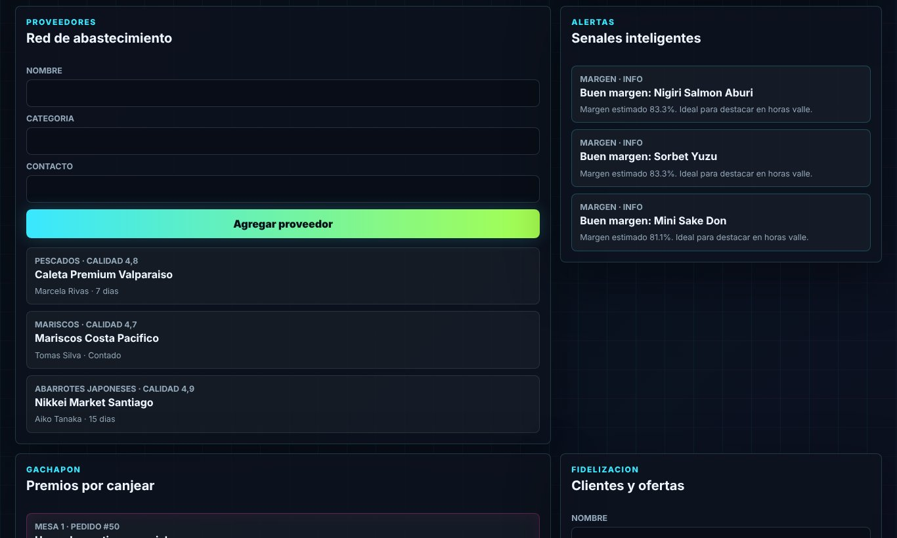
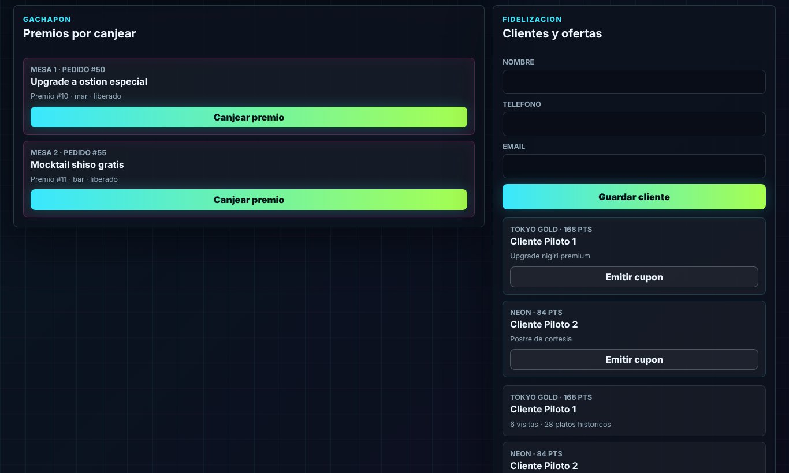
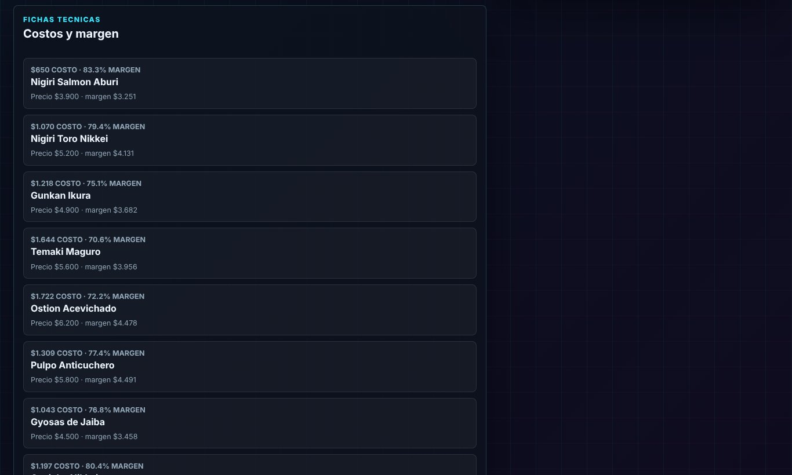
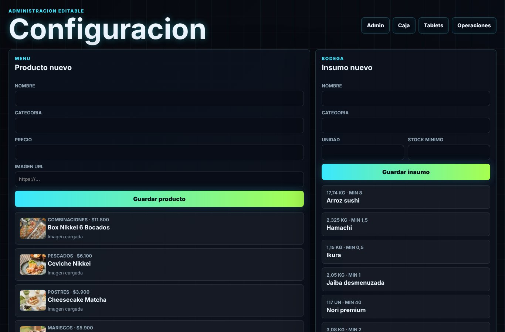
El comensal parte con la tablet de su mesa y explora el menú.
Las porciones llegan a la cocina KDS con su mesa y número de pedido.
Juegos de espera que liberan premios canjeables en la mesa.
Caja cierra la mesa y el dashboard muestra la operación del día.
Flask + PostgreSQL, JavaScript nativo
Dashboard ejecutivo, KDS y caja en tiempo real
Gunicorn + Nginx en fishcool.integralflex.cl
Tablets por mesa registradas con código, batería y cola de pedidos
Desde USD 6,9 por usuario al mes según el tamaño de tu equipo. Cotiza en línea o escríbenos y coordinamos una demo con tus datos.